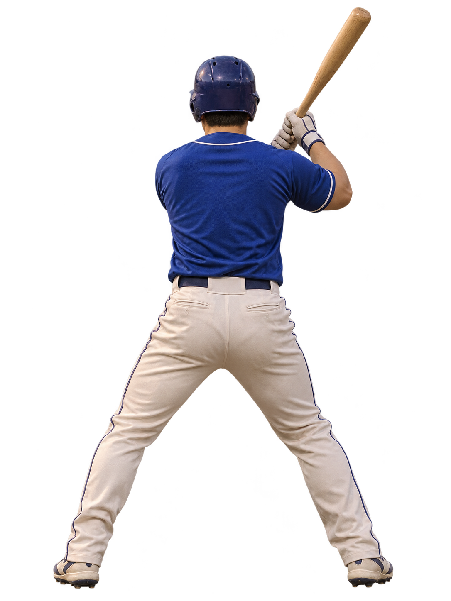
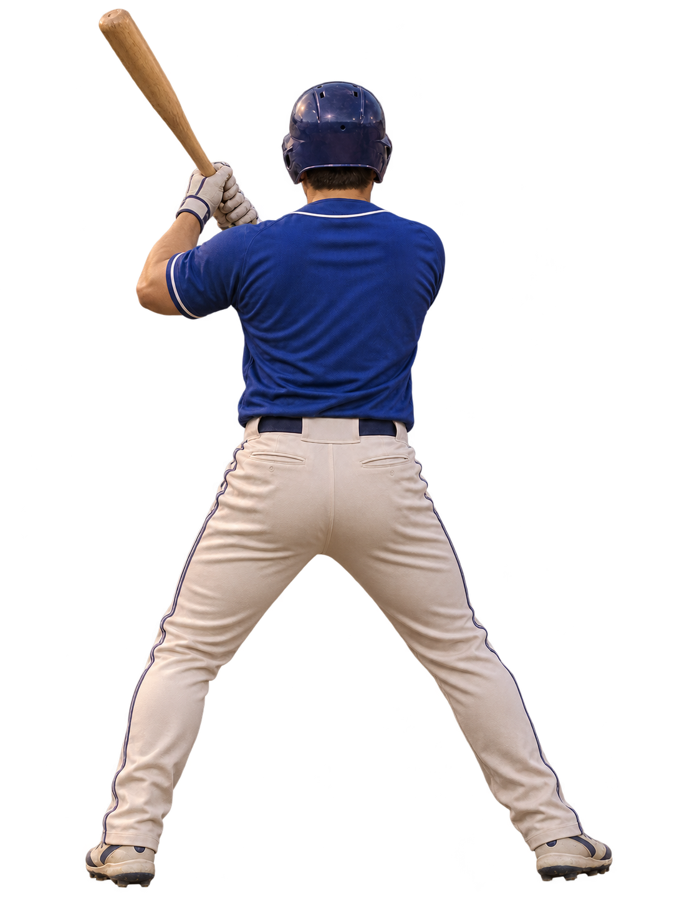

BASEBALL · READY STANCE 03
투수를 바라보는, 타격 준비.
포수 뒤에서 보는 하나의 카메라 기준으로 좌우 타석을 다시 맞춥니다. 얼굴이 아닌 헬멧 뒤와 등판이 보이는지, 배트·팔·발의 준비 자세가 자연스러운지 비교해 주세요.
- 같은 후면 시점
- 얼굴 노출 없음
- 한 장에 한 자세
- 번호 없는 등판 확인
경기장에 놓고 비교하기
이미지의 좌우반전 없이 각 타석의 새 준비 자세를 사용합니다.
우타 · 뒤에서 본 준비 자세

좌우타 원본 자세
원본을 열어 헬멧·그립·등판·무릎·발끝을 확대해서 볼 수 있습니다.

우타 · RIGHT-HANDED
오른손 타격 준비 자세의 후면과 몸의 균형을 확인합니다.
원본 확대 보기 ↗원본 준비 중

좌타 · LEFT-HANDED
같은 카메라·신체 크기에서 왼손 타격 자세를 비교합니다.
원본 확대 보기 ↗원본 준비 중이번 화면은 시작 준비폼 검토용입니다. 등번호는 빈 등판을 확인한 뒤 별도로 배치하며, 새 자세에서 이어지는 스윙 프레임은 다음 단계에서 맞춥니다. 현재 타격장의 스윙과 기록 규칙은 그대로입니다.